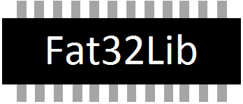

File System Stack for Embedded Devices
All
Data Structures
Files
Functions
Variables
Typedefs
Macros
Pages
Features
These are some of the features available on Fat32Lib:
FAT12/16/32 Support;
Portable C89 code;
Multiple partitions support;
Asynchronous IO (writes and reads);
Buffered and unbuffered IO (reads and writes);
Stream write feature for writing continuously to device;
Format support (can optimize file system for flash);
SD Card driver can use WRITE_MULTIPLE_BLOCKS with buffers as small as 512;
Devices with any sector size supported;
Low memory footprint;
Several configuration options;
Free for non-commercial use (under GPL v3);
Commercial license available (contact
frodriguez.developer@outlook.com
).
Copyright © 2013 by
Fernando Rodriguez